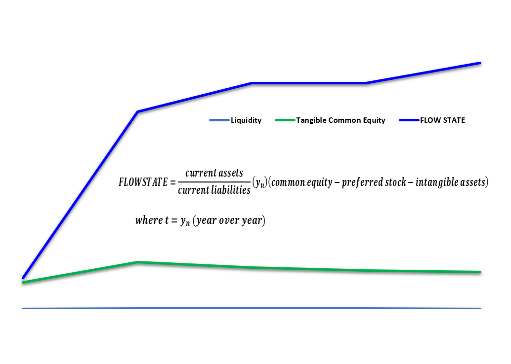
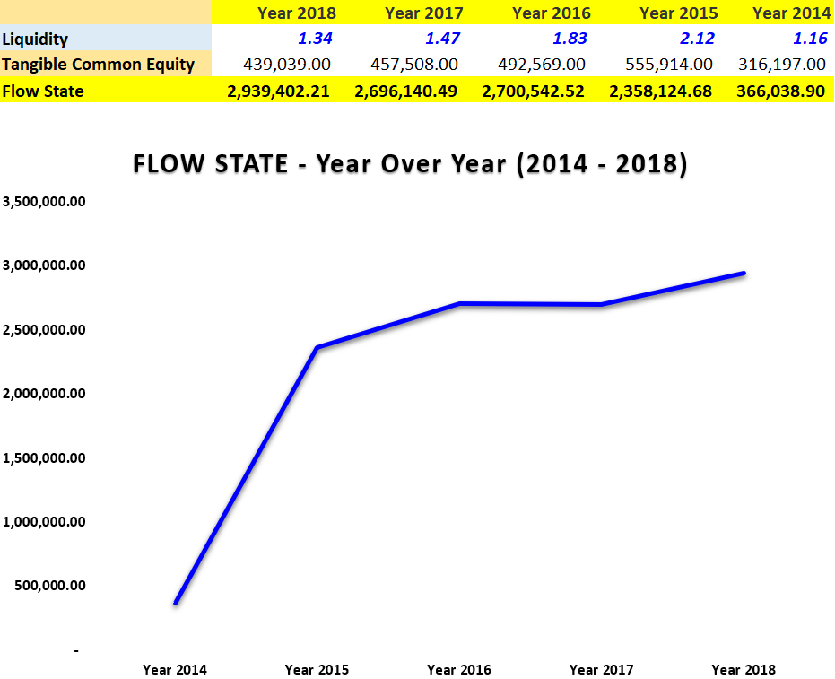

This article was originally published on Linkedin Pulse on March 26, 2019.

In the world of positive psychology, there is a concept known as flow state, where one’s state of mind is “in the zone,” and in the perfect moment of focus and immersion. Looking at flow state from a behavioral finance approach allows one to fuse psychology, economic theory, and a touch of art for everyday applications. Adopting this cross-disciplinary approach to mitigate traditional pro forma models will enable analysts (as key stakeholders in the financial markets) to apply the acronym of FLOW STATE to current assets and current liabilities portions of the balance sheet. Here is a unique take on my newly developed model when examining the last 5 years from the IMAX Corporation balance sheet as an example.

From a technical standpoint, what we have then from the pro forma is F.L.O.W S.T.A.T.E: Financial Liquidity of Weighted Scale of Time and Tangible (Common) Equity, where:
Financial liquidity = current assets divided by current liabilities. Multiplying that by time and once again by tangible equity, enables a deeper dive into the focal points of where the factors of liquidity, equity, and time interact to create a linear trend that will supplement investment decisions, strictly from a corporate finance perspective. The importance of this model is not to dissect each line item separately, but to holistically integrate these key performance indicators (KPIs) to more accurately reflect and/or depict what a company owns.